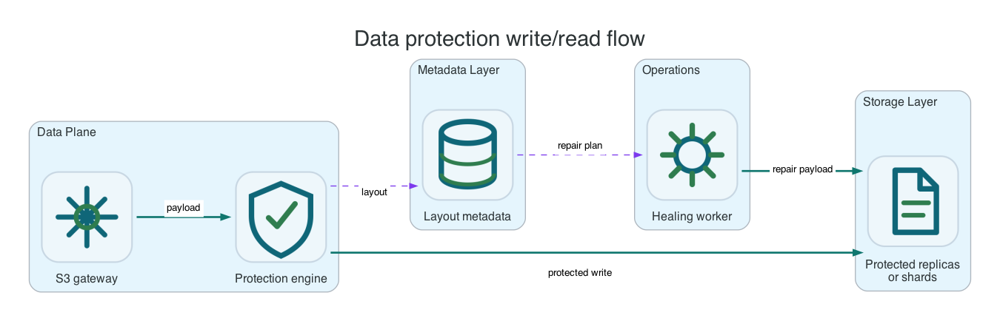

Reference / Runtime
Data protection engines.
Li9 S3 protects object payloads with replication or erasure coding. Replication is simpler and supports single-node or small deployments; erasure coding is capacity-efficient for production clusters with enough failure domains.
Engine Choice

| Engine | Use When | Tradeoff |
|---|---|---|
| Replication | Single-node, edge, small clusters, or simpler operational model. | Higher capacity overhead, simpler repair and read path. |
| Erasure coding | Production clusters with multiple independent failure domains. | Better capacity efficiency, requires enough nodes/shards and careful failure-domain spread. |
| Filesystem/shared backend | S3-over-PVC or an external filesystem is the storage plane. | Durability depends on the underlying storage provider. |
Data Shards And Parity Shards
In erasure coding, dataShards is the number of fragments required to reconstruct object data. parityShards is the number of additional fragments that allow recovery after failures. A 2+2 layout stores two data shards and two parity shards, tolerating up to two lost shards if the remaining shards are available.
Replication Example
storage:
data:
protection:
type: Replication
replication:
replicas: 1
placement:
layout: PerNodePVC
nodes: 1
failureDomain:
type: Node
pvc:
size: 20Gi
storageClassName: ocs-storagecluster-ceph-rbd
metadata:
placement:
type: ColocatedWithDataErasure Coding Example
storage:
data:
protection:
type: ErasureCoding
erasureCoding:
dataShards: 2
parityShards: 2
placement:
layout: PerNodePVC
nodes: 4
failureDomain:
type: Node
pvc:
size: 20Gi
storageClassName: ocs-storagecluster-ceph-rbd
metadata:
placement:
type: ColocatedWithDataVerification
oc -n li9-s3-runtime wait --for=condition=Ready s3storage/li9-s3 --timeout=20m
oc -n li9-s3-runtime get s3storage li9-s3 -o jsonpath='{.status.conditions[?(@.type=="Writable")].status}{"
"}'
oc -n li9-s3-runtime get pods -l app.kubernetes.io/name=storage-node -o wide